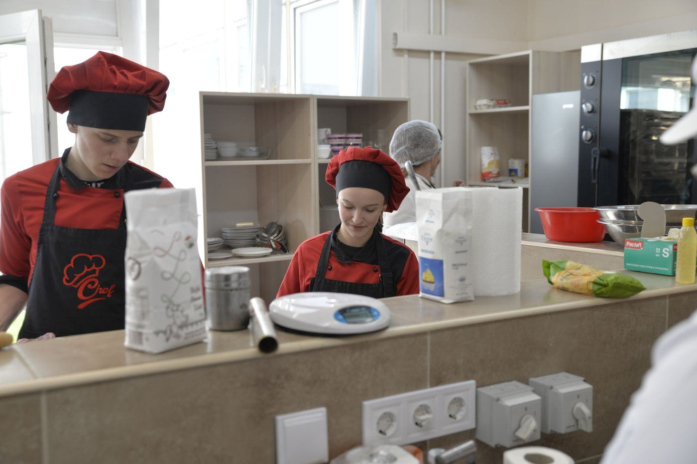

Home › Opleidingen › Toerisme, horeca & facilitair › Facilitair leidinggevende

Wat is Facilitair leidinggevende?
Facilitair leidinggevende is een opleiding op mbo (niveau 4) in de groep Toerisme, horeca & facilitair. Gastvrijheid en reizen: hotels, restaurants, toerisme en gebouwbeheer.
Wat kun je ermee?
- Hotelmanager (hoteldirecteur) of restaurantmanager (bedrijfsleider van een restaurant)
- Eventplanner (evenementenorganisator)
- Reisadviseur
- Facility manager (hoofd facilitaire zaken)
Wat heb je ervoor nodig?
- Voor mbo: een vmbo-diploma; voor niveau 4 meestal vmbo-tl/gl of kader. Zonder diploma kan Entree (niveau 1)
- Geen vast profiel. Talen en klantgerichtheid helpen. Vaak veel stage in de praktijk.
- Het helpt als je: Gastvrij en flexibel, Organiseren, Werken als anderen vrij zijn
Selectie of toelatingsexamen?
Meestal niet. Heb je de juiste vooropleiding en meld je je op tijd aan, dan mag je in principe beginnen.
Hoe lang duurt het?
mbo: 1 tot 4 jaar, afhankelijk van het niveau. Je kunt het volgen als bbl (werken en één dag naar school) en bol (vooral leren, met stages).
Bij bol ga je vooral naar school en loop je stage. Bij bbl werk je bij een leerbedrijf en ga je één dag per week naar school; je verdient dan al salaris. Het diploma is hetzelfde. Meer over bol en bbl
Waar kun je Facilitair leidinggevende studeren?
Bij 16 scholen, onder andere in Almelo, Amsterdam, Arnhem, Assen, Bergen Op Zoom, Breda, Doetinchem, Dordrecht, Eindhoven, Emmen, Gouda en Groningen:
- Albeda Horecacollege
- Albeda Rotterdam The Hague Airport College
- Alfa-college voor Beroepsopleidingen Hardenberg
- Alfa-college voor Zorg, Welzijn & Dienstverlening Groningen
- Campus Events & Hospitality
- Creatieve Industrie & Vakschool Wageningen
- Curio voedsel, groen en gastvrijheid
- DA VINCI COLLEGE
- Drenthe College
- Graafschap College, Economie & Dienstverlening
- Nova College Campus Haarlem
- ROC van Twente, College voor Hospitality & Wellness
- Summa Facilitair
- Talland College - Hospitality, Events & Security
- VISTA college
- mboRijnland Mbo-college Business en Hospitality
Verwante opleidingen
- Assistent horeca, voeding of voedingsindustrie
- Medewerker facilitaire dienstverlening
- Kok
- Zelfstandig werkend kok
- Medewerker hospitality
- Zelfstandig medewerker hospitality
- Leidinggevende hospitality
- Medewerker evenementenorganisatie
- Ondernemer hospitality
- Leidinggevende tourism
Past Facilitair leidinggevende bij jou? In de app zie je hoe ver elke school van je huis is, wanneer de open dagen zijn en wat je Plan B is. Je kunt hem ook op je lijst zetten.
Bekijk in de appDoe de Padvinder